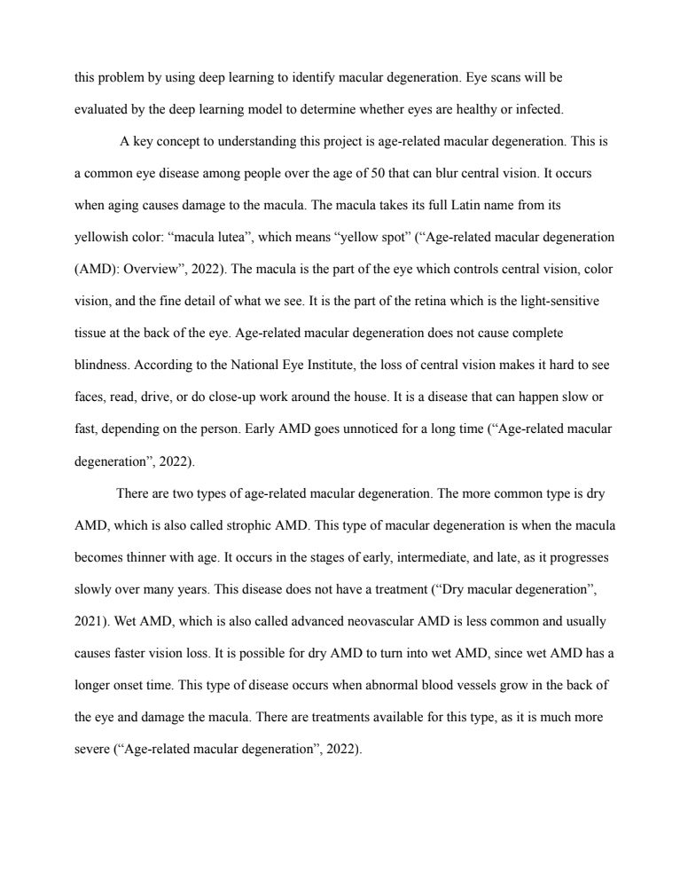

Research & Project Materials
My Gallery
My Raspberry Pi setup, a sample of my project report, and the poster I created for my age-related macular degeneration project. Click a picture to view it full size.

This picture is temporarily unavailable.
Embedded Systems
My Raspberry Pi Setup
A look at my Raspberry Pi setup and its connected components. Working with this hardware has helped me gain experience with embedded devices, hardware connections, and troubleshooting.

This picture is temporarily unavailable.
Written Report
Project Report Sample
A sample from the background section of my report on using deep learning to identify age-related macular degeneration. This section introduces the disease and explains the role of the macula in central vision.

This picture is temporarily unavailable.
Project Presentation
My Research Poster
The poster I created for my project, “Using Deep Learning to Identify Macular Degeneration.” It presents the purpose, background research, methods, and data models in one visual display.